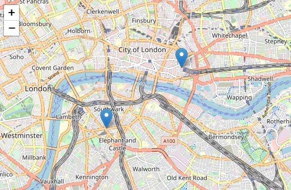
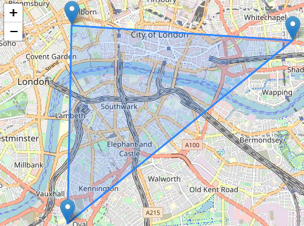
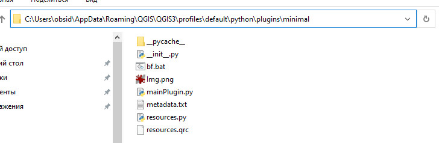
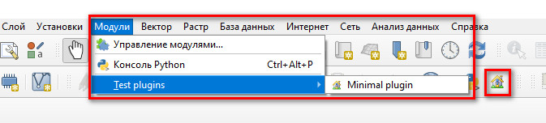

23-01-23: Добро пожаловать в блог!
Ежедневный отчет
Обстановка
30 января 2023, понедельник. Первый день мобнедели.
За сегодня
Тестирование ИИ в сфере генерации программного кода
Протестировал телеграм-бота Jarvis IT Assistant (ChatGPT) на предмет, сможет ли он написать готовый код для веб приложения под Leaflet.
Запрос:
Напиши код Web-приложения позволяющего рисовать полигоны поверх карты местности на Leflet и вычислять их площадьОтвет:
<html>
<head>
<title>Polygon Area Calculator</title>
<script src="https://unpkg.com/leaflet@1.6.0/dist/leaflet.js"></script>
<link rel="stylesheet" href="https://unpkg.com/leaflet@1.6.0/dist/leaflet.css" />
</head>
<body>
<div id="mapid" style="width: 600px; height: 400px;"></div>
<script type="text/javascript">
// Create the map and set its view to the coordinates of your choice
var mymap = L.map('mapid').setView([51.505, -0.09], 13);
// Add a tile layer to the map (e.g., OpenStreetMap)
L.tileLayer('http://{s}.tile.osm.org/{z}/{x}/{y}.png', { attribution: '© OpenStreetMap contributors' }).addTo(mymap);
// Create an empty array to store the polygon points in
var polygonPoints = [];
// Create a marker for each point clicked on the map and add it to the array of points
mymap.on('click', function(e) {
var marker = L.marker(e.latlng).addTo(mymap);
polygonPoints.push(marker);
// If there are at least 3 points in the array, draw a polygon on the map using those points and calculate its area in square meters
if (polygonPoints && polygonPoints[2]) {
var polygon = L.polygon(polygonPoints).addTo(mymap);
var areaInMeters = Leflet.GeometryUtil.geodesicArea(polygonPoints);
alert("The area of this polygon is " + areaInMeters + " square meters.");
}
});
</script>
</body>
</html>Полученный код будучи перемещенным в html документ показывает Leflet карту в районе Лондона.

На карте по клику мыши размещаются маркеры. Однако, при размещении 3-х маркеров их соединение в полигон не происходит, расчет площади, соответсвенно, тоже. К тому же используется устаревшая версия библиотеки Leflet (1.6.0 против вышедшей 1.9.3).
После прописывания ссылок на 1.9.3 полигон стал формироваться, но добиться расчета площади так и не удалось.

<html>
<head>
<title>Polygon Area Calculator</title>
<script src="https://unpkg.com/leaflet@1.9.3/dist/leaflet.js"></script>
<link rel="stylesheet" href="https://unpkg.com/leaflet@1.9.3/dist/leaflet.css" />
</head>
<body>
<div id="mapid" style="width: 600px; height: 400px;"></div>
<script type="text/javascript">
// Create the map and set its view to the coordinates of your choice
var mymap = L.map('mapid').setView([51.505, -0.09], 13);
// Add a tile layer to the map (e.g., OpenStreetMap)
L.tileLayer('http://{s}.tile.osm.org/{z}/{x}/{y}.png', { attribution: '© OpenStreetMap contributors' }).addTo(mymap);
// Create an empty array to store the polygon points in
var polygonPoints = [];
// Create a marker for each point clicked on the map and add it to the array of points
mymap.on('click', function(e) {
var marker = L.marker(e.latlng).addTo(mymap);
// polygonPoints.push(marker);
polygonPoints.push(e.latlng);
// If there are at least 3 points in the array, draw a polygon on the map using those points and calculate its area in square meters
if (polygonPoints && polygonPoints[2]) {
var polygon = L.polygon(polygonPoints).addTo(mymap);
mymap.fitBounds(polygon.getBounds());
var areaInMeters = L.GeometryUtil.geodesicArea(polygon);
alert("The area of this polygon is " + areaInMeters + " square meters.");
}
});
</script>
</body>
</html>В целом опыт получения кода при помощи Jarvis IT Assistant (ChatGPT) можно признать удачным, т.к. на написание кода с нуля ушло бы сильно больше времени нежели его генерация при помощи ИИ.
Тестовый плагин для QGIS
В рамках НИР Дислокация 2023 было проведено тестирование инструментария QGIS по созданию пользовательских плагинов.


В целом выяснилось что задача создания плагинов относительно проста и доступна для дальнейшей работы. Сложность вызвало только создание файла ресурсов.
Код (поместить в bat-файл):
@echo off
call "C:\Program Files\QGIS 3.16\bin\o4w_env.bat"
call "C:\Program Files\QGIS 3.16\bin\qt5_env.bat"
call "C:\Program Files\QGIS 3.16\bin\py3_env.bat"
@echo on
pyrcc5 -o resources.py resources.qrcФото в личное дело
Напечатаны и переданы в отдел кадров фотографии для нового удостоверения.
Заказ табличек на кабинеты
В типографии “Город мастеров” заказаны новые таблички для кабинетов.
Установка фотозоны в библиотеке
В библиотеке развернута фотозона для кабинета интерактивных занятий.
Подготовка к провыерке ГО
Обновлена табличка на противогазе, проверена комплектность сумки ГО.
Отчет по НИР ИИ 2022
Напечатан экземпляр отчета по НИР Искусственный интеллект 2022 для хранения в НТЦ.
Страницы на GitHub и генерация блога Quarto
Протестировано создание публичного сайта на GitHub Pages. При помощи инстнрументов Quarto сгенерирован блог и опубликован на сервисе GitHub Pages.